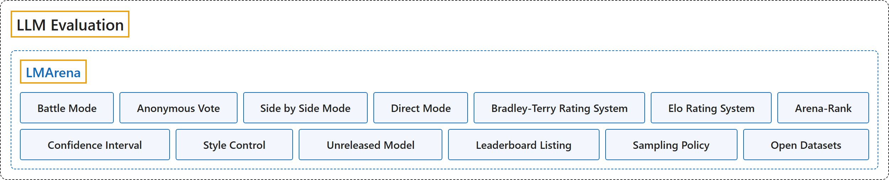

LMArena
Classification

Glossary
| Term | Definition | 中文翻译 | Source |
|---|---|---|---|
| LMArena LMArena |
(Summary) A community platform, formerly Chatbot Arena and now calling itself Arena, where people compare the answers of two anonymous models to their own prompt and vote for the one they prefer; the votes build public leaderboards. | （概述）一个社区平台，前身是 Chatbot Arena，现在自称 Arena：人们比较两个匿名模型对自己提示的回答，并投票选出更喜欢的一个；这些投票构成公开排行榜。 | Arena, n.d.-b, "How It Works" |
| Battle Mode 对战模式 |
(Summary) The mode in which a user is served two anonymous models, votes for the better answer, and sees the model names only after voting. | （概述）一种模式：用户拿到两个匿名模型，投票选出更好的回答，投票之后才看到模型名称。 | Arena, n.d.-b, "Compare Answers"; "Discover and Repeat" |
| Anonymous Vote 匿名投票 |
(Summary) A vote cast while both models are still anonymous; only such votes count, and votes cast after the names are revealed do not affect the rankings. | （概述）在两个模型都还匿名时投下的票；只有这种票计数，名称揭晓之后的投票不影响排名。 | Arena, n.d.-a, "Are the models truly anonymous?" |
| Side by Side Mode 并排模式 |
(Summary) A mode in which the user picks the models by name, so the matchup is not anonymous and its votes do not count toward the public leaderboard. | （概述）一种模式：用户按名称挑选模型，对局不匿名，其投票不计入公开排行榜。 | Arena, n.d.-a, "What happens when I vote in Side by Side?" |
| Direct Mode 直接模式 |
(Summary) A mode for chatting with one chosen model, with no voting; the prompts are still collected for research. | （概述）一种与选定的单个模型对话的模式，没有投票；提示仍被收集用于研究。 | Arena, n.d.-a, "What happens when I use Direct Mode?" |
| Bradley-Terry Rating System Bradley-Terry 评分体系 |
(Summary) The statistical model for paired comparisons that turns the votes into model ratings; it is computed from all the votes together and can take extra features into account, which style control uses. | （概述）用于成对比较的统计模型，把投票换算成模型评分；它由全部投票一起算出，并可纳入额外特征，风格控制就用到这一点。 | Arena, n.d.-a, "How is my feedback used to rank AI models?" |
| Elo Rating System Elo 等级分 |
(Summary) The FAQ compares Bradley-Terry to the Elo system used to rank chess players, which is why Arena scores read like Elo ratings. | （概述）常见问题页把 Bradley-Terry 比作国际象棋用来给棋手排名的 Elo 体系，所以 Arena 分数读起来像 Elo 等级分。 | Arena, n.d.-a, "How is my feedback used to rank AI models?" |
| Arena-Rank Arena-Rank |
"Arena-Rank: The ranking methodology powering the Arena leaderboard." | Arena-Rank：驱动 Arena 排行榜的排名方法。 | Arena, n.d.-c, "Arena-Rank: The ranking methodology powering the Arena leaderboard" |
| Confidence Interval 置信区间 |
(context) "compute ratings and 95% confidence intervals" | （语境）计算评分及 95% 置信区间 | Arena, n.d.-c, "Examples", code comment |
| Style Control 风格控制 |
(Summary) Adding style features (answer length and counts of markdown headers, bold and list elements) to the Bradley-Terry regression, so that a model's score reflects its substance rather than how it writes. | （概述）在 Bradley-Terry 回归中加入风格特征（回答长度，以及 markdown 标题、加粗和列表元素的数量），使模型分数反映的是内容本身而不是写法。 | Li et al., 2024, "Methodology" |
| Unreleased Model 未发布模型 |
(Summary) A model whose weights are neither open nor available through a public API or service; providers may test it on Arena under an anonymous label, and its score is marked preliminary after release until enough fresh votes arrive. | （概述）权重既未开放、也不能通过公开 API 或服务使用的模型；服务商可以用匿名代号在 Arena 上测试它，发布后其分数标为初步结果，直到收集到足够的新投票。 | Arena Team, 2024, "Evaluating unreleased models" |
| Leaderboard Listing 上榜条件 |
(Summary) The rule that the leaderboard lists only first-party foundation models generally available to the public: open weights, a public API, a public service, or a public early release on Arena with a written commitment. | （概述）排行榜只列入面向公众普遍可用的第一方基础模型：开放权重、公开 API、公开服务，或附书面承诺的在 Arena 上的公开抢先发布。 | Arena Team, 2024, "Listing models on the leaderboard" |
| Sampling Policy 抽样策略 |
(Summary) How models are picked for battles: public models are sampled about uniformly, with adjustments, and the score regression is reweighted so the sampling rates do not bias the scores. | （概述）对战时如何选模型：公开模型的抽样大致均匀、略有调整，计分回归经过重新加权，使抽样比例不会让分数产生偏差。 | Arena Team, 2024, "Sampling policy" |
| Open Datasets 开放数据集 |
(Summary) A portion of the anonymized voting data (prompts, votes and model pairings) that Arena releases on Hugging Face so that others can check the leaderboard; full conversation logs are not released. | （概述）Arena 在 Hugging Face 上发布的部分匿名投票数据（提示、投票结果和模型配对），让他人可以核查排行榜；完整对话记录不公开。 | Arena, n.d.-a, "Can I access the evaluation data for research?" |
References
Arena. (n.d.-a). FAQ. Retrieved November 10, 2026, from https://lmarena.ai/faq
Arena. (n.d.-b). How it works. Retrieved November 10, 2026, from https://lmarena.ai/how-it-works
Arena. (n.d.-c). Arena-Rank [Source code]. GitHub. Retrieved November 10, 2026, from https://github.com/lmarena/arena-rank
Arena Team. (2024, March 2). Arena leaderboard policy (Last updated September 1, 2026). Arena. https://arena.ai/blog/policy
Li, T., Angelopoulos, A., & Chiang, W.-L. (2024, August 29). Does style matter? Disentangling style and substance in Chatbot Arena (Last updated June 13, 2025). Arena. https://arena.ai/blog/style-control